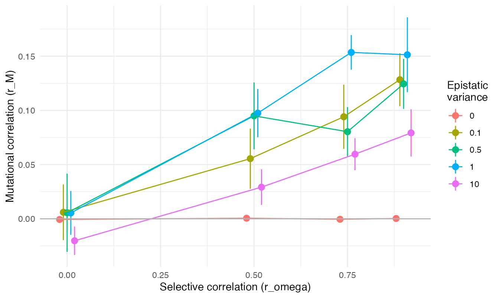
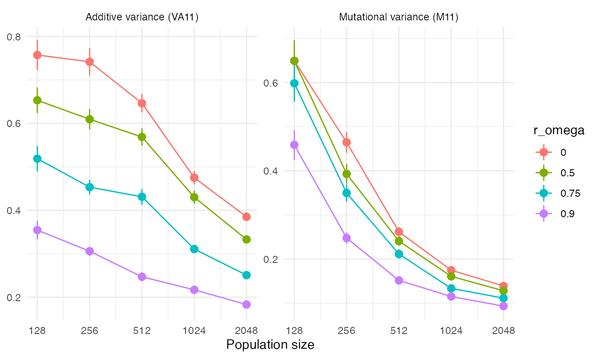
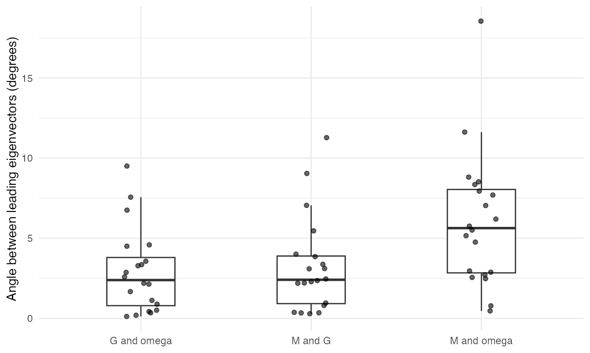
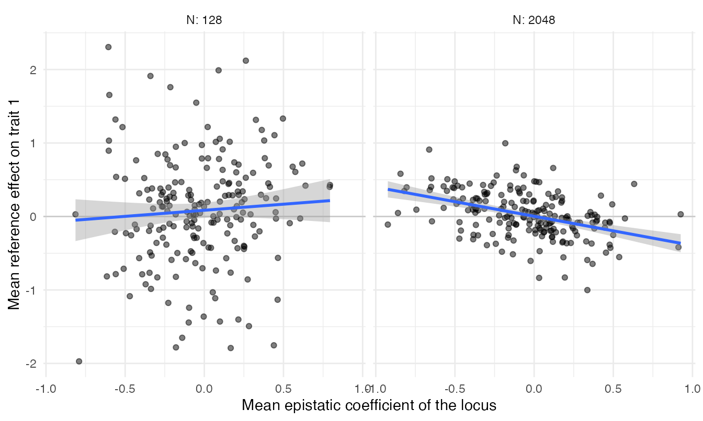
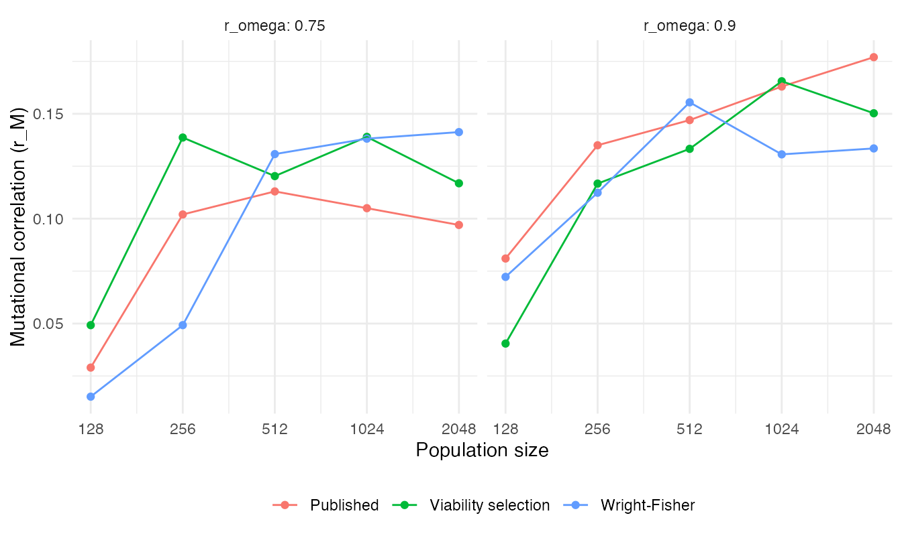

Reproducing Jones, Bürger & Arnold (2014)
Source:vignettes/jones-burger-arnold-2014.Rmd
jones-burger-arnold-2014.RmdJones, Bürger & Arnold (2014, Nature Communications 5: 3709, doi:10.1038/ncomms4709) asked how epistasis and selection shape the mutational variance-covariance matrix, M. With epistasis, the effect of a new mutation depends on the genetic background, so M can evolve. They found that
- epistasis inflates mutational variance;
- correlational selection makes M correlated, aligned with the selection surface, but only when there is epistasis: without it M is fixed;
- smaller populations evolve larger mutational variances;
- the leading eigenvectors of M, G and the selection surface (omega) align;
- in large populations, loci with larger effects have more negative epistatic coefficients.
This vignette repeats their simulations with evomod2. They take about
an hour of computing in total, so the vignette shows results stored in
the package; the script jones_burger_arnold_2014.R in
system.file("examples", package = "evomod2") runs them.
Model
Two traits are affected by 20 unlinked diploid loci. Each locus has a
reference effect vector (the sum of its two alleles), and every pair of
loci interacts through its own random tensor of epistatic coefficients,
drawn once per run from a normal distribution with mean 0 and variance
σε²:
x = Σ_i y_i + Σ_{i<j} ε_ij(y_i, y_j)In evomod2 this is multilinear() with coefficients from
pairwise_epsilon():
library(evomod2)
sigma2 <- 1 # variance of epistatic coefficients
r_omega <- 0.9 # correlation of the selection surface
model <- evomod_model(
multilinear(loci = 20, traits = 2, epsilon = pairwise_epsilon(20, 2, sd = sqrt(sigma2))),
mutation(rate = 0.0005, cov = diag(0.05, 2)), # added to reference effects
env_sd = 1)
omega <- 49 * matrix(c(1, r_omega, r_omega, 1), 2)
pop <- evolve(model, stabilizing(10000, omega = omega), n = 512)
additive_covariance(pop) # G and its additive part
mutational_covariance(pop) # M: effects of single new mutationsParameters follow their Table 1: mutational variance 0.05 per trait
(no mutational correlation), μ = 0.0005 per locus,
ω11 = ω22 = 49, environmental variance 1,
N = 512; each locus starts with five equally frequent
alleles of small effect; 5000 generations of burn-in, then 5000 in which
G, its additive part and M are measured 20 times and averaged; 20 runs
per setting.
Two things can differ from their simulations:
-
Reproduction. By default evomod2 draws parents in
proportion to fitness each generation (
wright_fisher()). Their life cycle, in which each female mates with two males and has four offspring, followed by viability selection and regulation toKindividuals, is available asviability_selection(); the results below use the default, and a later section repeats Tables 2 and 3 with their life cycle. -
Additive variance. They estimated it from a
half-sib design; here it is the least-squares additive covariance
(
additive_covariance()), the variance of the best linear prediction of genotypic values from the loci.
Epistasis and correlational selection (their Table 2)
Means over 20 runs, N = 512, for each variance of the
epistatic coefficients (sigma2) and selective correlation
(r_omega):
| sigma2 | r_omega | VG11 | VG22 | rG | VA11 | VA22 | rA | M11 | M22 | rM |
|---|---|---|---|---|---|---|---|---|---|---|
| 0.0 | 0.00 | 0.526 | 0.508 | -0.003 | 0.526 | 0.508 | -0.003 | 0.050 | 0.050 | -0.001 |
| 0.0 | 0.50 | 0.467 | 0.485 | 0.158 | 0.467 | 0.485 | 0.158 | 0.050 | 0.050 | 0.001 |
| 0.0 | 0.75 | 0.389 | 0.393 | 0.257 | 0.389 | 0.393 | 0.257 | 0.050 | 0.050 | 0.000 |
| 0.0 | 0.90 | 0.310 | 0.301 | 0.430 | 0.310 | 0.301 | 0.430 | 0.050 | 0.050 | 0.000 |
| 0.1 | 0.00 | 0.607 | 0.616 | -0.008 | 0.571 | 0.580 | -0.008 | 0.108 | 0.117 | 0.006 |
| 0.1 | 0.50 | 0.573 | 0.547 | 0.232 | 0.541 | 0.515 | 0.244 | 0.102 | 0.101 | 0.055 |
| 0.1 | 0.75 | 0.423 | 0.433 | 0.325 | 0.400 | 0.410 | 0.344 | 0.095 | 0.097 | 0.094 |
| 0.1 | 0.90 | 0.322 | 0.320 | 0.481 | 0.306 | 0.304 | 0.505 | 0.081 | 0.084 | 0.128 |
| 0.5 | 0.00 | 0.725 | 0.680 | -0.018 | 0.642 | 0.596 | -0.020 | 0.211 | 0.199 | 0.006 |
| 0.5 | 0.50 | 0.611 | 0.645 | 0.210 | 0.532 | 0.565 | 0.236 | 0.185 | 0.189 | 0.095 |
| 0.5 | 0.75 | 0.450 | 0.439 | 0.307 | 0.393 | 0.382 | 0.346 | 0.159 | 0.148 | 0.080 |
| 0.5 | 0.90 | 0.308 | 0.308 | 0.468 | 0.275 | 0.275 | 0.522 | 0.125 | 0.129 | 0.124 |
| 1.0 | 0.00 | 0.729 | 0.719 | 0.003 | 0.610 | 0.600 | 0.004 | 0.253 | 0.252 | 0.005 |
| 1.0 | 0.50 | 0.639 | 0.652 | 0.211 | 0.541 | 0.557 | 0.242 | 0.261 | 0.265 | 0.097 |
| 1.0 | 0.75 | 0.507 | 0.490 | 0.340 | 0.430 | 0.413 | 0.397 | 0.204 | 0.200 | 0.154 |
| 1.0 | 0.90 | 0.299 | 0.309 | 0.444 | 0.257 | 0.268 | 0.508 | 0.155 | 0.157 | 0.151 |
| 10.0 | 0.00 | 0.712 | 0.710 | -0.020 | 0.471 | 0.479 | -0.024 | 0.524 | 0.519 | -0.020 |
| 10.0 | 0.50 | 0.640 | 0.619 | 0.139 | 0.448 | 0.429 | 0.191 | 0.504 | 0.494 | 0.029 |
| 10.0 | 0.75 | 0.422 | 0.407 | 0.210 | 0.291 | 0.279 | 0.277 | 0.407 | 0.378 | 0.060 |
| 10.0 | 0.90 | 0.242 | 0.235 | 0.296 | 0.175 | 0.170 | 0.374 | 0.309 | 0.296 | 0.079 |
Published values for some of the same settings (their Table 2,
N = 512):
published2 <- data.frame(
sigma2 = c(0, 0, 1, 1, 0.1, 0.1, 0.1, 10, 10),
r_omega = c(0, 0.9, 0, 0.9, 0.5, 0.75, 0.9, 0, 0.9),
M11 = c(0.05, 0.05, 0.267, 0.168, NA, NA, NA, 0.565, 0.282),
rM = c(0, 0, -0.002, 0.141, 0.038, 0.095, 0.120, 0.005, 0.074),
VG11 = c(0.53, 0.30, NA, 0.31, NA, NA, NA, NA, NA),
rG = c(NA, 0.420, NA, 0.441, NA, NA, NA, NA, NA))
keys <- published2[c("sigma2", "r_omega")]
knitr::kable(data.frame(keys,
M11 = published2$M11, M11_evomod2 = lookup(keys, t2, "M11"),
rM = published2$rM, rM_evomod2 = lookup(keys, t2, "rM"),
VG11 = published2$VG11, VG11_evomod2 = lookup(keys, t2, "VG11")),
digits = 3, row.names = FALSE)| sigma2 | r_omega | M11 | M11_evomod2 | rM | rM_evomod2 | VG11 | VG11_evomod2 |
|---|---|---|---|---|---|---|---|
| 0.0 | 0.00 | 0.050 | 0.050 | 0.000 | -0.001 | 0.53 | 0.526 |
| 0.0 | 0.90 | 0.050 | 0.050 | 0.000 | 0.000 | 0.30 | 0.310 |
| 1.0 | 0.00 | 0.267 | 0.253 | -0.002 | 0.005 | NA | 0.729 |
| 1.0 | 0.90 | 0.168 | 0.155 | 0.141 | 0.151 | 0.31 | 0.299 |
| 0.1 | 0.50 | NA | 0.102 | 0.038 | 0.055 | NA | 0.573 |
| 0.1 | 0.75 | NA | 0.095 | 0.095 | 0.094 | NA | 0.423 |
| 0.1 | 0.90 | NA | 0.081 | 0.120 | 0.128 | NA | 0.322 |
| 10.0 | 0.00 | 0.565 | 0.524 | 0.005 | -0.020 | NA | 0.712 |
| 10.0 | 0.90 | 0.282 | 0.309 | 0.074 | 0.079 | NA | 0.242 |
d <- res$table2
d$sigma2 <- factor(d$sigma2)
ggplot(d, aes(r_omega, rM, colour = sigma2)) +
stat_summary(fun.data = mean_se, position = position_dodge(width = 0.05)) +
stat_summary(fun = mean, geom = "line", position = position_dodge(width = 0.05)) +
geom_hline(yintercept = 0, colour = "grey70") +
labs(x = "Selective correlation (r_omega)", y = "Mutational correlation (r_M)",
colour = "Epistatic\nvariance")
Population size (their Table 3 and Fig. 1)
Means over 20 runs, with σε² = 1:
| N | r_omega | VG11 | VG22 | rG | VA11 | VA22 | rA | M11 | M22 | rM |
|---|---|---|---|---|---|---|---|---|---|---|
| 128 | 0.00 | 0.773 | 0.703 | -0.024 | 0.757 | 0.687 | -0.024 | 0.650 | 0.621 | -0.009 |
| 128 | 0.50 | 0.667 | 0.623 | 0.180 | 0.653 | 0.610 | 0.184 | 0.649 | 0.602 | -0.002 |
| 128 | 0.75 | 0.530 | 0.525 | 0.338 | 0.519 | 0.514 | 0.346 | 0.599 | 0.523 | 0.015 |
| 128 | 0.90 | 0.362 | 0.362 | 0.492 | 0.354 | 0.355 | 0.501 | 0.459 | 0.476 | 0.072 |
| 256 | 0.00 | 0.786 | 0.785 | -0.012 | 0.742 | 0.741 | -0.013 | 0.465 | 0.459 | 0.016 |
| 256 | 0.50 | 0.652 | 0.654 | 0.167 | 0.610 | 0.611 | 0.178 | 0.393 | 0.388 | 0.047 |
| 256 | 0.75 | 0.480 | 0.492 | 0.333 | 0.453 | 0.464 | 0.352 | 0.350 | 0.367 | 0.049 |
| 256 | 0.90 | 0.326 | 0.334 | 0.474 | 0.306 | 0.314 | 0.503 | 0.248 | 0.256 | 0.112 |
| 512 | 0.00 | 0.763 | 0.709 | 0.031 | 0.647 | 0.596 | 0.033 | 0.262 | 0.252 | 0.018 |
| 512 | 0.50 | 0.676 | 0.671 | 0.205 | 0.569 | 0.564 | 0.245 | 0.241 | 0.238 | 0.042 |
| 512 | 0.75 | 0.506 | 0.482 | 0.345 | 0.431 | 0.410 | 0.396 | 0.212 | 0.197 | 0.131 |
| 512 | 0.90 | 0.287 | 0.276 | 0.424 | 0.247 | 0.237 | 0.488 | 0.152 | 0.145 | 0.155 |
| 1024 | 0.00 | 0.692 | 0.693 | 0.000 | 0.475 | 0.470 | 0.001 | 0.175 | 0.168 | -0.002 |
| 1024 | 0.50 | 0.593 | 0.606 | 0.189 | 0.430 | 0.435 | 0.250 | 0.161 | 0.164 | 0.092 |
| 1024 | 0.75 | 0.426 | 0.457 | 0.296 | 0.311 | 0.339 | 0.389 | 0.134 | 0.145 | 0.138 |
| 1024 | 0.90 | 0.280 | 0.264 | 0.376 | 0.217 | 0.203 | 0.479 | 0.115 | 0.111 | 0.131 |
| 2048 | 0.00 | 0.671 | 0.658 | -0.007 | 0.385 | 0.368 | -0.022 | 0.139 | 0.136 | -0.005 |
| 2048 | 0.50 | 0.570 | 0.577 | 0.186 | 0.333 | 0.341 | 0.303 | 0.128 | 0.131 | 0.112 |
| 2048 | 0.75 | 0.403 | 0.420 | 0.278 | 0.251 | 0.265 | 0.418 | 0.111 | 0.113 | 0.141 |
| 2048 | 0.90 | 0.257 | 0.259 | 0.349 | 0.183 | 0.185 | 0.479 | 0.093 | 0.098 | 0.133 |
Published values (their Table 3, σε² = 1):
published3 <- data.frame(
N = c(128, 256, 512, 1024, 2048, 128, 2048, 128, 2048, 128, 256, 512, 1024, 2048),
r_omega = c(rep(0.9, 5), 0, 0, 0.5, 0.5, rep(0.75, 5)),
M11 = c(0.425, NA, NA, 0.112, 0.095, 0.710, 0.139, rep(NA, 7)),
rM = c(0.081, 0.135, 0.147, 0.163, 0.177, 0.018, -0.012, 0.109, 0.065,
0.029, 0.102, 0.113, 0.105, 0.097))
keys <- published3[c("N", "r_omega")]
knitr::kable(data.frame(keys,
M11 = published3$M11, M11_evomod2 = lookup(keys, t3, "M11"),
rM = published3$rM, rM_evomod2 = lookup(keys, t3, "rM")),
digits = 3, row.names = FALSE)| N | r_omega | M11 | M11_evomod2 | rM | rM_evomod2 |
|---|---|---|---|---|---|
| 128 | 0.90 | 0.425 | 0.459 | 0.081 | 0.072 |
| 256 | 0.90 | NA | 0.248 | 0.135 | 0.112 |
| 512 | 0.90 | NA | 0.152 | 0.147 | 0.155 |
| 1024 | 0.90 | 0.112 | 0.115 | 0.163 | 0.131 |
| 2048 | 0.90 | 0.095 | 0.093 | 0.177 | 0.133 |
| 128 | 0.00 | 0.710 | 0.650 | 0.018 | -0.009 |
| 2048 | 0.00 | 0.139 | 0.139 | -0.012 | -0.005 |
| 128 | 0.50 | NA | 0.649 | 0.109 | -0.002 |
| 2048 | 0.50 | NA | 0.128 | 0.065 | 0.112 |
| 128 | 0.75 | NA | 0.599 | 0.029 | 0.015 |
| 256 | 0.75 | NA | 0.350 | 0.102 | 0.049 |
| 512 | 0.75 | NA | 0.212 | 0.113 | 0.131 |
| 1024 | 0.75 | NA | 0.134 | 0.105 | 0.138 |
| 2048 | 0.75 | NA | 0.111 | 0.097 | 0.141 |
d <- res$table3
d$r_omega <- factor(d$r_omega)
long <- rbind(data.frame(d[c("N", "r_omega")], what = "Mutational variance (M11)", value = d$M11),
data.frame(d[c("N", "r_omega")], what = "Additive variance (VA11)", value = d$VA11))
ggplot(long, aes(N, value, colour = r_omega)) +
stat_summary(fun.data = mean_se) +
stat_summary(fun = mean, geom = "line") +
scale_x_log10(breaks = c(128, 256, 512, 1024, 2048)) +
facet_wrap(~ what, scales = "free_y") +
labs(x = "Population size", y = NULL, colour = "r_omega")
Alignment of M, G and omega (their Fig. 2)
N = 4096, σε² = 1, and a selection surface
with the shape of r_omega = 0.9 rotated to a different
orientation in each run. Angles between leading eigenvectors (0 means
aligned, 90 perpendicular):
f2 <- res$fig2
angles <- data.frame(pair = rep(c("G and omega", "M and omega", "M and G"), each = nrow(f2)),
angle = c(f2$angle_G_omega, f2$angle_M_omega, f2$angle_M_G))
ggplot(angles, aes(pair, angle)) +
geom_boxplot(outlier.shape = NA, width = 0.4) +
geom_jitter(width = 0.1, alpha = 0.6) +
labs(x = NULL, y = "Angle between leading eigenvectors (degrees)")
summary(f2[c("angle_G_omega", "angle_M_omega", "angle_M_G", "G_ratio", "M_ratio")])
#> angle_G_omega angle_M_omega angle_M_G G_ratio
#> Min. :0.1186 Min. : 0.4632 Min. : 0.2885 Min. :1.965
#> 1st Qu.:0.7916 1st Qu.: 2.8381 1st Qu.: 0.9193 1st Qu.:2.350
#> Median :2.3888 Median : 5.6311 Median : 2.4082 Median :2.464
#> Mean :2.9072 Mean : 6.0361 Mean : 3.2434 Mean :2.470
#> 3rd Qu.:3.7976 3rd Qu.: 8.0423 3rd Qu.: 3.8889 3rd Qu.:2.683
#> Max. :9.5035 Max. :18.5459 Max. :11.2770 Max. :2.858
#> M_ratio
#> Min. :1.337
#> 1st Qu.:1.537
#> Median :1.617
#> Mean :1.628
#> 3rd Qu.:1.746
#> Max. :1.997G_ratio and M_ratio are the ratios of the
largest to the smallest eigenvalue (elongation); omega has a ratio of
19.
Allelic effects and epistatic coefficients (their Fig. 3)
Ten loci, epistasis only within trait 1. For each locus: its mean reference effect on trait 1 in the evolved population, against the mean of its epistatic coefficients with the other loci:
f3 <- res$fig3
f3$N <- factor(f3$N)
ggplot(f3, aes(epistasis, effect)) +
geom_hline(yintercept = 0, colour = "grey80") +
geom_point(alpha = 0.5) +
geom_smooth(method = "lm", formula = y ~ x) +
facet_wrap(~ N, labeller = label_both) +
labs(x = "Mean epistatic coefficient of the locus", y = "Mean reference effect on trait 1")
sapply(split(f3, f3$N), function(d) {
fit <- summary(lm(effect ~ epistasis, d))
c(slope = coef(fit)[2, 1], R2 = fit$r.squared, p = coef(fit)[2, 4])
})
#> 128 2048
#> slope 0.165544547 -3.967660e-01
#> R2 0.004751478 1.793379e-01
#> p 0.332108814 4.159752e-10Jones et al. report R² = 0.01 (p = 0.09) for N = 128 and
R² = 0.22 (p << 0.0001) for N = 2048. Their exact
definition of a locus’s allelic effect and epistatic coefficient is in
their Supplementary Information; the one used here is described
above.
How the reproduction compares
-
Without epistasis M does not evolve: the mutational
variances stay at the input value (0.05) and the mutational correlation
at zero, whatever the selection surface, while G still follows omega
(genetic correlation 0.43 at
r_omega = 0.9; published 0.42). -
Epistasis inflates mutational variance (0.25 at
σε² = 1, 0.52 atσε² = 10, withr_omega = 0; published 0.27 and 0.57), and correlational selection makes M correlated only when there is epistasis (r_M= 0.15 atσε² = 1,r_omega = 0.9; published 0.14). -
Smaller populations evolve larger mutational
variances: at
r_omega = 0.9, M11 falls from 0.46 at N = 128 to 0.09 at N = 2048 (published 0.43 and 0.10). The mutational correlation at large N is somewhat lower than published (0.13 at N = 2048 against 0.18), and at N = 128 withr_omega = 0.5we find none (0.00 against 0.11); see the comparison of life cycles below. - M, G and omega align: median angles between leading eigenvectors of 2.4 degrees (G and omega) and 5.6 degrees (M and omega), with G less elongated than omega and M less than G (eigenvalue ratios 2.5 and 1.6, against 19).
- Large populations show the negative relationship between allelic effects and epistatic coefficients (R² = 0.18 at N = 2048; published 0.22) and small populations do not (R² = 0.005 at N = 128; published 0.01).
Their life cycle
Tables 2 and 3 repeated with
viability_selection(mates = 2, offspring_per_mate = 2),
their life cycle. Its effective population size is about n,
like Wright-Fisher (each female leaves on average two adult offspring
with variance 1, each male two with variance 3, and with equal numbers
of each sex this gives N_e close to n; the
package tests check the neutral rate of drift), so the two life cycles
should differ only in how selection acts: on zygotes before mating here,
on parents in Wright-Fisher.
both <- rbind(
data.frame(life_cycle = "Wright-Fisher", res$table3[c("N", "r_omega", "M11", "rM", "VA11")]),
data.frame(life_cycle = "Viability selection", res$viability_table3[c("N", "r_omega", "M11", "rM", "VA11")]))
pub <- data.frame(life_cycle = "Published", N = published3$N, r_omega = published3$r_omega,
M11 = published3$M11, rM = published3$rM, VA11 = NA)
long <- rbind(aggregate(cbind(M11, rM) ~ life_cycle + N + r_omega, both, mean),
pub[!is.na(pub$rM), c("life_cycle", "N", "r_omega", "M11", "rM")])
long$r_omega <- factor(long$r_omega)
ggplot(long[long$r_omega %in% c("0.75", "0.9"), ], aes(N, rM, colour = life_cycle)) +
geom_point() + geom_line() +
scale_x_log10(breaks = c(128, 256, 512, 1024, 2048)) +
facet_wrap(~ r_omega, labeller = label_both) +
labs(x = "Population size", y = "Mutational correlation (r_M)", colour = NULL) +
theme(legend.position = "bottom")
v3 <- avg(res$viability_table3, c("N", "r_omega"))
keys <- published3[c("N", "r_omega")]
knitr::kable(data.frame(keys,
rM = published3$rM, rM_wright_fisher = lookup(keys, t3, "rM"),
rM_viability = lookup(keys, v3, "rM"),
M11 = published3$M11, M11_wright_fisher = lookup(keys, t3, "M11"),
M11_viability = lookup(keys, v3, "M11")),
digits = 3, row.names = FALSE)| N | r_omega | rM | rM_wright_fisher | rM_viability | M11 | M11_wright_fisher | M11_viability |
|---|---|---|---|---|---|---|---|
| 128 | 0.90 | 0.081 | 0.072 | 0.040 | 0.425 | 0.459 | 0.490 |
| 256 | 0.90 | 0.135 | 0.112 | 0.117 | NA | 0.248 | 0.251 |
| 512 | 0.90 | 0.147 | 0.155 | 0.133 | NA | 0.152 | 0.144 |
| 1024 | 0.90 | 0.163 | 0.131 | 0.166 | 0.112 | 0.115 | 0.108 |
| 2048 | 0.90 | 0.177 | 0.133 | 0.150 | 0.095 | 0.093 | 0.093 |
| 128 | 0.00 | 0.018 | -0.009 | 0.004 | 0.710 | 0.650 | 0.714 |
| 2048 | 0.00 | -0.012 | -0.005 | 0.012 | 0.139 | 0.139 | 0.135 |
| 128 | 0.50 | 0.109 | -0.002 | 0.023 | NA | 0.649 | 0.695 |
| 2048 | 0.50 | 0.065 | 0.112 | 0.089 | NA | 0.128 | 0.127 |
| 128 | 0.75 | 0.029 | 0.015 | 0.049 | NA | 0.599 | 0.585 |
| 256 | 0.75 | 0.102 | 0.049 | 0.139 | NA | 0.350 | 0.347 |
| 512 | 0.75 | 0.113 | 0.131 | 0.120 | NA | 0.212 | 0.189 |
| 1024 | 0.75 | 0.105 | 0.138 | 0.139 | NA | 0.134 | 0.139 |
| 2048 | 0.75 | 0.097 | 0.141 | 0.117 | NA | 0.111 | 0.112 |
The two life cycles give the same results within sampling error:
across the 20 settings of Table 3, the mean mutational correlations
differ by 0.023 on average, about the standard error of each mean
(0.023). Their life cycle does not explain the remaining differences
from the published values (at N = 2048 and r_omega = 0.9,
r_M is 0.133 with Wright-Fisher and 0.150 with viability
selection, against 0.177 published; at N = 128 and
r_omega = 0.5, -0.002 and 0.023 against 0.109). Those
differences are about as large as the variation among the published
entries themselves: the same setting appears as 0.141 in their Table 2
and 0.147 in Table 3, and at N = 128 their r_M is 0.109 for
r_omega = 0.5 but 0.029 for the stronger
r_omega = 0.75.
v2 <- avg(res$viability_table2, c("sigma2", "r_omega"))
keys <- published2[c("sigma2", "r_omega")]
knitr::kable(data.frame(keys,
rM = published2$rM, rM_wright_fisher = lookup(keys, t2, "rM"),
rM_viability = lookup(keys, v2, "rM"),
M11 = published2$M11, M11_wright_fisher = lookup(keys, t2, "M11"),
M11_viability = lookup(keys, v2, "M11")),
digits = 3, row.names = FALSE)| sigma2 | r_omega | rM | rM_wright_fisher | rM_viability | M11 | M11_wright_fisher | M11_viability |
|---|---|---|---|---|---|---|---|
| 0.0 | 0.00 | 0.000 | -0.001 | 0.001 | 0.050 | 0.050 | 0.050 |
| 0.0 | 0.90 | 0.000 | 0.000 | 0.000 | 0.050 | 0.050 | 0.050 |
| 1.0 | 0.00 | -0.002 | 0.005 | 0.002 | 0.267 | 0.253 | 0.271 |
| 1.0 | 0.90 | 0.141 | 0.151 | 0.181 | 0.168 | 0.155 | 0.167 |
| 0.1 | 0.50 | 0.038 | 0.055 | 0.052 | NA | 0.102 | 0.106 |
| 0.1 | 0.75 | 0.095 | 0.094 | 0.128 | NA | 0.095 | 0.096 |
| 0.1 | 0.90 | 0.120 | 0.128 | 0.132 | NA | 0.081 | 0.080 |
| 10.0 | 0.00 | 0.005 | -0.020 | -0.008 | 0.565 | 0.524 | 0.514 |
| 10.0 | 0.90 | 0.074 | 0.079 | 0.086 | 0.282 | 0.309 | 0.294 |
Running it
script=$(Rscript -e 'cat(system.file("examples", "jones_burger_arnold_2014.R", package = "evomod2"))')
Rscript $script table2 1 0.9 1 results # sigma_e^2, r_omega, replicate
Rscript $script table3 512 0.9 1 results # N, r_omega, replicate
Rscript $script fig2 1 results
Rscript $script fig3 2048 1 results
Rscript $script summarise results jones_burger_arnold_2014.rds